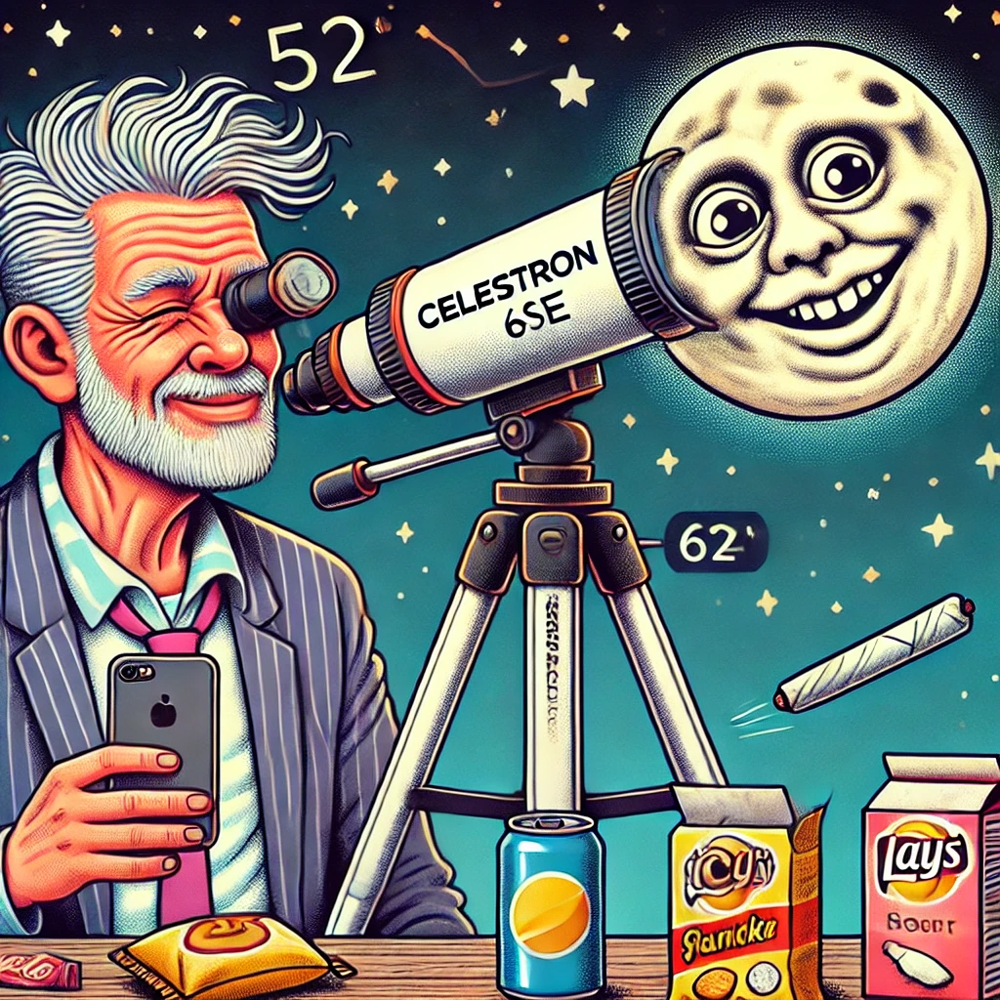

"Lets light up and watch the light show."

About Me
“A STONER ME…DOIN... ASTRONOMY”.......What else could you possibly be interested in?.......and I'm trying to roll and type....sucks man!
Content:
YES...I'm quite contented at the moment.
WELCOME NOTE.
How bored or stoned are you to find your way here. I’m here to smoke weed and look up…feel free to peruse stoned or not….we are here to have fun so no real questions because I don’t know the answers! But if your looking for stupid answers to stupid questions then perhaps you happened upon the right place! Light up and enjoy….The only part of this, whatever it is you can trust, is the photography taken by me with my 6SE...
WHAT IS ASTRONOMY?
The art of looking up and not on Google...the irony..!!!